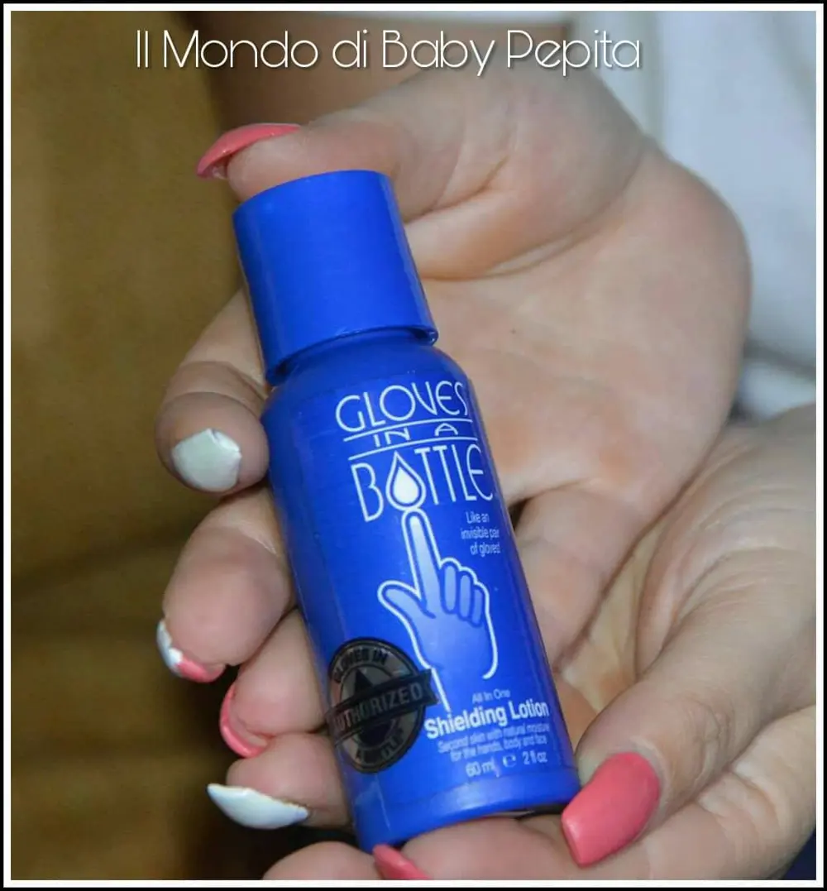
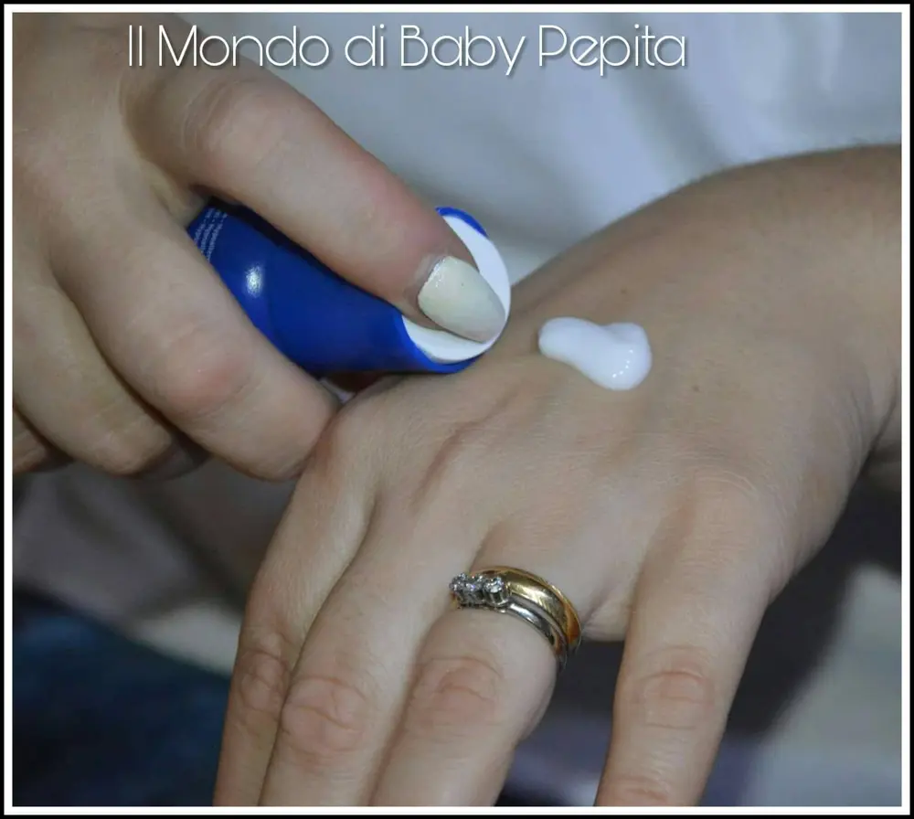

GUANTI IN BOTTIGLIA - SHIELDING LOTION

Guanti: Con sorpresa sono stata omaggiata di questa lozione mani. Di cosa si tratta? Di guanti in una bottiglia. .
Proprio così, non sto scherzando.
Come si chiama quest'azienda?
GLOVES IN A BOTTLE - SHIELDING LOTION.
La shielding lotion è una lozione che si unisce al primo strato della pelle diventato come un vero guanto.

A cosa serve?
Grazie alla leggera sensazione di umidità naturale e gli oli, garantiscono un idratazione continua delle pelle in modo rapido ed efficace. È dunque una cura per la pelle naturale.

Vi è mai capitato di avere mani secche e screpolate, ed avete usato creme idratanti ma scoprendo però dopo che è passato l'effetto della crema, di avere mani più secche di prima?
Con shielding lotion questo non succede perché aderisce perfettamente con la nostra pelle agendo lentamente ed idratando senza lasciare nessuna sensazione di unto. E' per questo che è stata creata in modo che diventasse un vero guanto sulla pelle creando uno strato invisibile.
Le creme che usiamo comunemente sono comunque sempre soluzioni temporanee ma con shielding lotion il problema di pelle secca è risolto.
È un prodotto testato clinicamente ed è stato approvato da dermatologi.
È stato progettato per proteggere la pelle dalle irritazioni e tossine esterne.
La maggior parte dei saponi e detergenti contengono fragranze, coloranti, agenti antibatterici e molti altri ingredienti che stando a contatto con una pelle screpolata, arrossata, irritata, compromettono lo stato di guarigione peggiorando talvolta la situazione.
Ma anche l'uso quotidiano di molti detersivi irritano lo strato di pelle esterno causando condizioni cutanee, eczema, psoriasi, allergie cutanee e molti altri problemi della pelle.
"La pelle secca e pruriginosa è un modo della natura per farti sapere che questa barriera protettiva è stata spogliata".-Dr. Peter Helton dermatologo cosmetico certificato dal consiglio di amministrazione Newport Beach, CA
Iniziando invece ad utilizzare una lozione come questa possiamo iniziare a proteggere la nostra pelle dai pericoli esterni; migliorando in modo naturale.
L'unico segreto per risolvere il problema di pelle secca è sapere che è molto disidratata. Quindi lo scopo di questi guanti in bottiglia è proprio quello di umidificare la pelle a lungo e per più ore.
Nota negativa:
L'unica pecca di questa lozione è proprio l'odore, essendo al naturale non ha profumazioni e di conseguenza è solitamente inodore ma a tratti un pò acida.
La mia esperienza è comunque positiva in quanto aderisce davvero alla pelle risultando invisibile, praticamente come non messa, ma invece è già lì che protegge la pelle :D
Prezzo: 17,95 €
Puoi provare a diventare ambassador e provare questa fantastica lozione in bottiglia iscrivendoti QUI